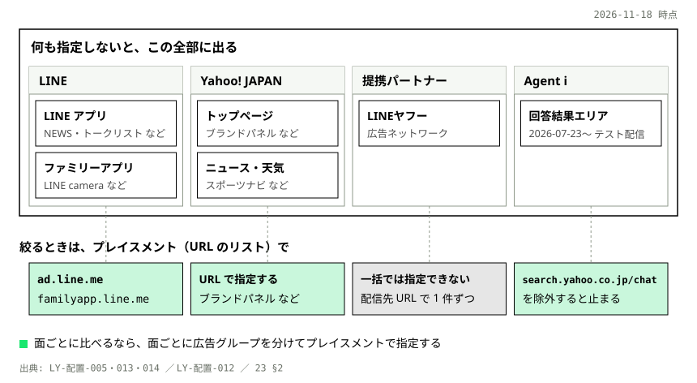
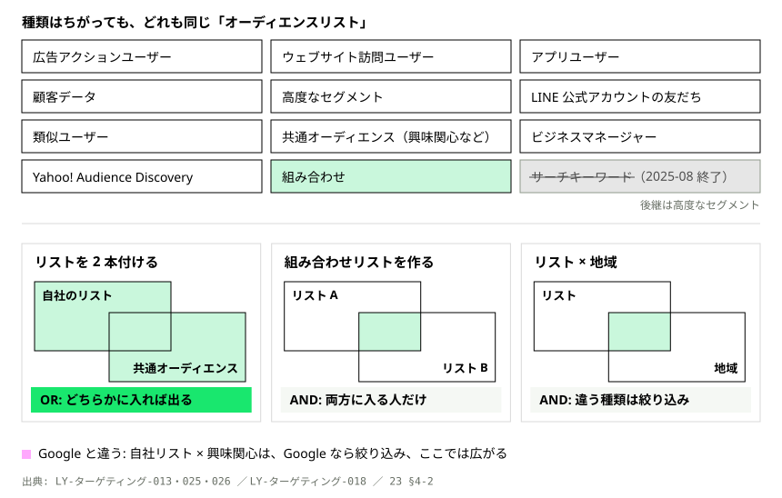

[ LINEヤフー / 23 ]
23ディスプレイ広告のターゲティングと配信面
位置づけ: 統合後の「LINEヤフー広告 ディスプレイ広告（運用型）」で、どこに出るか（配信面）と誰に出すか（ターゲティング）と何を入稿するか（形式と仕様）を引くメモ。Google の ../Google広告の基礎/23_オーディエンスとターゲティング.md（以下 G23）、16_ディスプレイ広告.md（以下 G16）、12_デマンドジェネレーション.md（G12）に当たる。LINE 広告からの読み替えは 61_LINE広告との統合の状況.md、入札は `02_入札と予算.m
このメモについて
- 確認日: 2026-11-18（LINEヤフー広告ヘルプの本文を Claude のアプリ内のブラウザで読んだ。ターゲティング設定・オーディエンスリストターゲティング・オーディエンスリストとは・複数のターゲティングの AND／OR・スマートターゲティング・データ連携停止・顧客データのインポート・プレイスメントターゲティング・LINE への配信 FAQ・提携パートナー・主な掲載ページ・コンテンツキー…
- 位置づけ: 統合後の「LINEヤフー広告 ディスプレイ広告（運用型）」で、どこに出るか（配信面）と誰に出すか（ターゲティング）と何を入稿するか（形式と仕様）を引くメモ。Google の
../Google広告の基礎/23_オーディエンスとターゲティング.md（以下 G23）、16_ディスプレイ広告.md（以下 G16）、12_デマンドジェネレーション.md（G… - 使い方: 確認日から 30 日を過ぎていたら、末尾の出典を取り直してから使う。LINE の面（友だちタブ 2026-07〜、Agent i 2026-07〜、チャット誘導 2026-12 予定）は動きが速い
- 凡例: ✓ 公式で確認 ／ △ 資料によって食い違う ／ ? 確認できず
- 主張の出どころの印: 公式ヘルプ本文・お知らせ・公式ページ ／〔公式・抜粋〕本文を開けず検索結果の抜粋 ／〔推測〕書き手の推測
地図
本文
0.先に結論
- 01
何も指定しないと、LINE・Yahoo! JAPAN・提携パートナーのすべてに出る。ターゲティングを全部未設定なら「あらゆるインターネットユーザー」が対象 ✓（H000044455、S-03 p37）。LINE アプリへの配信に設定は要らず、対象の広告タイプなら自動で入る ✓（H000044287）
- 02
面を指定する手段はプレイスメント（URL のリスト）だけ。LINE アプリは
ad.line.me、LINE ファミリーアプリはfamilyapp.line.me、Agent i はsearch.yahoo.co.jp/chat。LINEヤフー広告ネットワークを一括で指定する方法は無い ✓（H000044287、S-38） - 03
違う種類のターゲティングは AND、同じ種類の中は OR。オーディエンスリストを何本付けても OR。共通オーディエンス（興味関心など）と自社のオーディエンスリストも同じ「オーディエンスリスト」の中なので OR ✓（H000044314、H000044292、S-03 p26）。絞りたいなら「組み合わせ」リストを作る
- 04
スマートターゲティングは、コンバージョン・アプリ訴求・サイト誘導の広告グループで初期値「利用する」。オーディエンスリストを付けているとリストの外にも配信し、学習後はそのリストに実績が積まれなくなる。地域・年齢・性別・デバイス・プレイスメント・コンテンツキーワードの範囲は守る ✓（H000047178）
- 05
Yahoo! の検索履歴を使う手段は「高度なセグメント」（旧サーチキーワードターゲティングは 2025-08 終了）。キーワード版は「その語を検索した人＋検索行動が似た人」、拡張範囲は「広い／狭い」。URL 版は「Yahoo! の検索結果からその URL（下層を含む）を訪れた人」。100 日間インプレッションが無いとデータ連携が止まる ✓（H000044833、H000044326）
- 06
LINE 公式アカウントの友だち・ブロック中の友だちのリストは 1 アカウント 1 件ずつ。LINE 公式アカウントとの接続が要り、接続が切れると 0 になり戻せない。友だち追加目的では、このリストの作成が前提（すでに友だちの人を除外する用途）✓（H000044833、H000044326、H000044292）
- 07
類似ユーザーは元リストの過去 28 日（顧客データは 180 日）のユーザーが 100 を超えて初めてたまる。1 つの元リストから 10 件まで、配信開始まで 2 日ほど ✓（H000044833）
- 08
顧客データはメール・電話番号・IDFA／AAID。有効期間は 1〜180 日で、180 日ごとに入れ直す。100 件未満のファイルは取り込まれない ✓（H000044507）
- 09
年齢は 18〜19 歳から 5 歳刻み、70 歳以上、「不明」。酒・たばこ・パチンコ・出会い系・性的表現などは、年齢ターゲティングに関係なく制限年齢に出ない。オーディエンスリストを使うと、18 歳未満と確定している人には出ない ✓（H000044348、H000044455）
- 10
ブランドセーフティの手段はプレイスメント（配信・除外）、コンテンツキーワードの除外、第三者計測（IAS・DoubleVerify）。ただしコンテンツキーワードの除外は、解析できない面（LINE の面、タイムライン型の枠、多くのアプリ）には効かず、そこには出る ✓（H000044178、S-03 p27、ブランドセーフティの公式ページ）
1.Google との対比（G23・G16・G12 と）
- どちらも「オーディエンスリスト」なので OR
- 高度なセグメント
- 類似ユーザー
- LINE 公式アカウントの友だち・ブロック中の友だち
- 「不明」は「不明だけに配信」の意味
- 除外と「住んでいる・最近いた」の選択は不可
| 観点 | Google 広告（G23・G16） | LINEヤフー広告 ディスプレイ | 運用の判断への効き方 |
|---|---|---|---|
| 配信面 | Google ディスプレイ ネットワーク、YouTube、Gmail（DG は Discover なども） | Yahoo! JAPAN の各面、LINE（LINE NEWS・トークリスト・ホーム・友だちタブ・ミニアプリタブ・ファミリーアプリ）、LINEヤフー広告ネットワーク、Agent i ✓（H000046545、H000044287、S-38） | LINE 面と Yahoo! 面で単価も成果も違う（S-48）。面ごとの分割は自分で設計する |
| 何も指定しないとき | ネットワークと YouTube のどこにでも出る（G16 §0） | 全部の面に出る ✓（S-03 p37） | 同じ |
| 面の指定 | プレースメントの指定・除外 | プレイスメントリスト（URL の前方・後方一致）。1 広告グループに配信・除外合わせて 10 リスト ✓（H000044420） | LINE 全体・ネットワーク全体のような「面の種類」での指定は限られる |
| 重ねがけ | 違う種類は絞り込み、同じ種類は広がる（G16 §0） | 違う種類は AND、同じ種類は OR ✓（H000044314） | 同じ考え方 |
| 興味関心 × 自社リスト | 種類が違えば絞り込み | どちらも「オーディエンスリスト」なので OR ✓（H000044292、S-03 p26） | Google の感覚で重ねると広がる。AND は組み合わせリストで |
| 自動で広げる仕組み | 最適化されたターゲティング（既定オン、外へ広げる） | スマートターゲティング（目的で初期値「利用する」、オーディエンスリストの外へ広げる）✓（H000047178） | 似ている。違いは「広げるのはオーディエンスリストだけ」 |
| 検索履歴の利用 | カスタム セグメント（検索語句。Google 検索の語） | 高度なセグメント（Yahoo! の検索。キーワードか URL）✓（H000044833） | Yahoo! 検索の利用者の意図を取れるのが強み |
| 類似 | 類似セグメントは終了 | 類似ユーザー（今もある）✓（H000044833） | 小さい元リストを広げる手段が残っている |
| 顧客リスト | カスタマー マッチ（絞り込みに利用実績の条件あり） | 顧客データ（メール・電話・広告 ID、条件の記載なし）✓（H000044507） | 少額のアカウントでも使える |
| 自社の SNS・メッセージ資産 | YouTube 視聴者など | LINE 公式アカウントの友だち・ブロック中の友だち、BM 経由の LINE 公式アカウント・LINE 広告のオーディエンス ✓（H000044833） | Google に無い。友だち追加・チャット誘導と組む |
| 年齢 | 18〜24 から、「不明」を既定で含む | 18〜19・20〜24 から 5 歳刻み・70 以上・「不明」は「不明だけに配信」の意味 ✓（H000044348） | 「不明」の意味が違う（§6-2） |
| 地域 | 所在地やインタレスト（既定）／所在地。除外あり | 都道府県・市区郡・半径。「いる場所または関心・関連のある場所」で判定。除外と「住んでいる・最近いた」の選択は不可 ✓（H000044379、S-03 p25） | 来店商材で「その地域にいる人だけ」に絞れない |
| 文脈 | コンテンツ（キーワード・トピック・プレースメント） | コンテンツキーワード（記事の内容。LINE 面は対象外）✓（H000044178、S-03 p27） | 文脈で狙うのは Yahoo! 面中心 |
| 調整率 | DG 移行で入札単価調整が使えなくなる（G16 §0） | 手動入札でだけ全ターゲティングに調整率（+100%／−90% まで）✓（H000044531） | 自動入札では面・属性の調整は効かない |
| 安全性 | コンテンツの適合性、除外 | プレイスメント、コンテンツキーワード除外、IAS・DV の計測、DV の Pre-bid ✓（公式ページ） | 除外の効かない面がある（§8） |
| インプレッションの数え方 | 視認範囲は 50% が 1 秒（G16 §0） | vCPM は 50% が 1 秒 ✓（S-03 p24） | 定義は同じ |
2.配信面

指定しなければ LINE・Yahoo! JAPAN・提携先・Agent i の全部に出て、面を絞る道具はプレイスメントだけ。LINE の面と Yahoo! の面は単価も成果も違うので、比べたいなら広告グループを面ごとに分けて指定する。
出典: LY-配置-005・LY-配置-013・LY-配置-014 ほか 6 件 · 2026-11-18 時点
- 追加のオークション
- 一括指定はできない
- 特定の面に出したいならプレイスメント
- 面ごとに成果を比べたいなら、面ごとに広告グループ（またはキャンペーン）を分け、プレイスメントで配信対象を指定する
- Agent i の面は、配信先 URL レポートでは
search.yahoo.co.jpと出る
2-1.面の一覧 ✓公式
| 系統 | 主な面 | 出典 |
|---|---|---|
| Yahoo! JAPAN | トップページ（ブランドパネル枠・プライムカバー枠ほか）、Yahoo!ニュース、天気・災害、スポーツナビ、ファイナンス、路線情報（アプリ名は Yahoo!乗換案内）など | H000046545（表は画像。2026-09 現在の版）、S-47 |
| LINE アプリ | LINE NEWS のトップ・カテゴリータブ・一部記事、トークリスト最上部 など | H000044287 |
| LINE アプリ（新しい面） | 友だちタブ（2026-07-06〜）、ミニアプリタブ（旧ウォレット、2026-02-19〜）。LINE VOOM は 2026-09-30 で終了 | S-45、S-46、S-44（00 §8-2） |
| LINE ファミリーアプリ | LINE camera、LINE GAME など LINE と連携するアプリ | H000044287 |
| LINEヤフー広告ネットワーク | 審査を経た提携パートナーのサイト・アプリ。提携先経由で他の媒体に出ることもある | H000044482 |
| Agent i | 回答結果エリア（2026-07-23 からテスト配信、課金あり） | S-38 |
- 提携パートナーによっては SSP やヘッダービディングの追加のオークションがあり、LINEヤフー側で勝っても掲載されないことがある。その場合は料金が発生しない ✓（H000044482）
- 掲載面の品質: 人の目とシステムで 24 時間体制の審査・パトロール。提携先は広告配信ガイドラインで選定、配信後も監視 ✓（H000044482）
2-2.LINE アプリに出る広告タイプ ✓公式（H000044287）
バナー（画像 1:1・6:5・16:9）、バナー（動画 1:1・16:9）、レスポンシブ（画像 1:1・1.91:1・3:2）、レスポンシブ（動画 1:1・16:9・9:16・3:2）、カルーセル、動的ディスプレイ
- LINE では画像・動画の角が丸く加工されることがある。一部の LINE 面では 9:16 がトリミングされる
2-3.面の指定方法 ✓公式
| 指定したいもの | 方法 | 出典 |
|---|---|---|
| LINE アプリだけ | プレイスメントリストに ad.line.me（iOS・Android 共通。2025-02 時点）。ファミリーアプリとネットワークは含まない | H000044287 |
| LINE ファミリーアプリ | familyapp.line.me（全ページ）。個別アプリは配信先 URL レポートに出る個別 URL で | H000044287 |
| LINEヤフー広告ネットワーク | 一括指定はできない。配信先 URL レポートの URL を使って個別に。ネットワーク経由かどうかは判別できない | H000044287 |
| Yahoo! JAPAN のブランドパネルだけ | プレイスメントで指定する方法がある（PC、スマートフォン、プライムカバー） | H000044420、H000046545 |
| Agent i を止める | プレイスメントで search.yahoo.co.jp/chat を除外。配信先 URL レポートには search.yahoo.co.jp と出る | S-38 |
| LINE アプリに出さない | プレイスメントで LINE アプリを除外、または LINE 以外を配信対象に指定 | H000044287 |
- 目的が「サイト誘導」でも、配信先がトップページに限られることは無い。特定の面に出したいならプレイスメント、とヘルプが明記 ✓（H000044496）
- 統合前の LINE 広告にあった「LINE 広告ネットワークの一括指定」は不可（アプリ単位なら可）✓（S-03、61 §4-1）
運用の判断への効き方
- 面ごとに成果を比べたいなら、面ごとに広告グループ（またはキャンペーン）を分け、プレイスメントで配信対象を指定する。プレイスメントの実績は、1 人が複数リストに当たると最大の調整率のリストにだけ加算されるので、合計が他のレポートと合わない（H000044420）
- Agent i の面は、配信先 URL レポートでは
search.yahoo.co.jpと出る。Yahoo! 検索系の他の面と見分けにくいので、止めるかどうかを先に決めて除外リストを作っておく〔推測〕（S-38） - ネットワーク面の質が気になる商材は、配信先 URL レポートで個別に除外していくしかない（一括の除外は無い）（H000044287）
3.キャンペーン目的・課金と広告タイプ
- 使える目的はアカウントによって違う
- 10 秒以上の再生
- クリックで最適化
3-1.目的ごとの組み合わせ ✓公式（H000044496、本文）
| 目的 | 最適化ポイント | 入札戦略 | 課金 | 広告タイプ |
|---|---|---|---|---|
| サイト誘導 | クリック数 | クリック数の最大化、拡張クリック単価、個別クリック単価 | クリック | テキスト、バナー（画像・動画）、レスポンシブ（画像・動画）、カルーセル |
| 動画再生 | 動画再生数 | 動画再生数の最大化（動画再生課金かビューアブル課金β）、動画再生単価、ビューアブルインプレッション単価（インストリームのみ） | 動画再生／ビューアブル | バナー（動画）、レスポンシブ（動画）、インストリーム |
| アプリ訴求（インストール／標準） | インストール数／アプリ内イベント数 | CV 最大化（目標値あり／なし）、（標準は）クリック数の最大化・拡張 CPC・個別 CPC | クリック／ビューアブル（β） | テキスト、バナー（動画は 16:9 のみ）、レスポンシブ、カルーセル |
| コンバージョン | CV 数 | CV 最大化・価値の最大化（あり／なし）、クリック数の最大化、拡張 CPC、個別 CPC | クリック／ビューアブル（β） | テキスト、バナー、レスポンシブ、カルーセル |
| 友だち追加 | 友だち追加数 | 友だち追加数の最大化（あり／なし）、個別友だち追加単価 | 友だち追加 1 件を 1 クリックとして課金 | レスポンシブ、カルーセル |
| 商品リスト訴求 | CV 数（動的ディスプレイの商品リスト必須） | CV・価値の最大化、クリック数の最大化、拡張 CPC、個別 CPC | クリック／ビューアブル（β） | 動的ディスプレイ |
| ブランド認知 | ビューアブルインプレッション数 | ビューアブルインプレッション単価、ビューアブルインプレッション数の最大化 | ビューアブル | テキスト、バナー、レスポンシブ、カルーセル |
| 来店促進 | 実店舗への来店 | CV 最大化（あり／なし）、クリック数の最大化、拡張 CPC、個別 CPC | クリック／ビューアブル（β） | テキスト、バナー、レスポンシブ、カルーセル |
- 「友だち追加」は一部のお客様のみ。使える目的はアカウントによって違う ✓
- 00 §2-2 で △ だった「来店促進」は、ヘルプ本文の表に載っている（統合資料 S-03 の一覧には無い）✓
- 2026-12-09 に「チャット誘導」目的が加わる予定 ✓（S-40、00 §2-2）
- 課金の細部: クリック課金は同じセッション内の 2 回目以降のクリックは無料。動画再生課金は10 秒以上の再生（10 秒未満の動画は最後まで）で 1 回、入札は 1,000 再生あたり ✓（H000044496）
3-2.広告タイプ ✓公式（H000044412）
| タイプ | 中身 |
|---|---|
| バナー | 画像か動画だけ。文章は入らない |
| レスポンシブ | テキスト・画像・動画・ボタンで構成。端末・面・目的に合わせて形を変える |
| 動的ディスプレイ | CSV でアップロードした商品リストを面に合わせて表示 |
| カルーセル | 複数枚の画像を横長に。カードごとに画像と URL を変えられる |
| テキスト | タイトル・説明文・URL だけ |
| インストリーム | 動画コンテンツの中に出る動画広告 |
- 画像・動画の形式とターゲティングの組み合わせによっては配信されないことがある ✓
運用の判断への効き方
- 「コンバージョン」目的で作っても、入札がクリック数の最大化ならクリックで最適化される（
02§2-3）。目的と入札戦略の組み合わせを点検表に入れる - 友だち追加目的は使えないアカウントがある。使えない場合の代わりは ?（ヘルプに案内なし）
4.ターゲティングの全種類と組み合わせ
- 広告グループ単位
- すべて未設定なら、あらゆるユーザーに配信
- オーディエンスリストターゲティングを使うと、本人の申告で 18 歳未満と確定しているユーザーには配信されない
- 神奈川県に滞在または関心のある人
- AND にしたいオーディエンスは「組み合わせ」リストで作る
- 各 1 件
4-1.運用型で設定できるもの ✓公式（H000044455）
デバイス（OS・プラットフォームを含む）、性別、年齢、オーディエンスリスト、プレイスメント、コンテンツキーワード、曜日・時間帯、地域。すべて広告グループ単位。加えてスマートターゲティング（§5）
- すべて未設定なら、あらゆるユーザーに配信 ✓
- ターゲティングの精度は保証されない。面によってはユーザーを識別できず、設定の対象外になることがある ✓
- オーディエンスリストターゲティングを使うと、本人の申告で 18 歳未満と確定しているユーザーには配信されない ✓
4-2.AND と OR ✓公式（H000044314、H000044292、H000044420、H000044178）

興味関心などの共通オーディエンスも自社のリストも同じ「オーディエンスリスト」なので、2 本付けると OR で広がる。旧 LINE 広告や Google の感覚で重ねていたら、組み合わせリストで AND を作り直す。
出典: LY-ターゲティング-013・LY-ターゲティング-025・LY-ターゲティング-026 ほか 6 件 · 2026-11-18 時点
表で見る（6 行。上の図のもとの表）
| 組み合わせ | 結果 |
|---|---|
| 違う種類のターゲティング（例: オーディエンスリスト × 地域） | AND |
| 同じ種類の中（例: 共通オーディエンスの「映画好き」と「大学生」） | OR |
| オーディエンスリストを複数（自社リスト・共通オーディエンスの混在を含む） | OR（いずれかに当てはまれば配信） |
| プレイスメントリストを複数（配信対象） | OR（いずれかのリストの URL なら配信） |
| コンテンツキーワードリストを複数（配信対象） | OR |
| 同じ URL が配信対象と除外の両方 | 除外が優先 |
- ヘルプの例: 共通オーディエンス 3 つ（OR）× 神奈川県 → 「3 つのどれかに当てはまる人のうち、神奈川県に滞在または関心のある人」✓（H000044314）
- AND にしたいオーディエンスは「組み合わせ」リストで作る（「LINEヤフー提供（共通オーディエンス）」以外を組み合わせられる）✓（H000044833、S-03 p26）
4-3.上限 ✓公式（H000044203、H000044833、H000044420、H000044178）
| 対象 | 上限 |
|---|---|
| オーディエンスリスト | 1 アカウント 600 件（MCC から共有されたものを含み、LINE オーディエンス（移行）は含まない） |
| 1 つのサイトリターゲティングタグ | 500 件 |
| 類似ユーザー・Yahoo! Audience Discovery・ビジネスマネージャー | 各 1 アカウント 100 件 |
| LINE 公式アカウントの友だち・ブロック中の友だち | 各 1 件 |
| 訪問履歴の有効期間 | 1〜540 日 |
| プレイスメントリスト | 1 アカウント 300 件、1 広告グループに配信・除外合わせて 10 件 |
| コンテンツキーワードリスト | 1 広告グループに配信・除外合わせて 10 件 |
| フリークエンシーキャップ | 1〜99,999 回、日／週／月 |
| 曜日・時間帯 | 1 時間単位 |
- 1 広告グループに付けられるオーディエンスリストの数は、今回のヘルプ本文では確かめられなかった。00 §6-2 の「配信と除外の合計で 10 件まで」（抜粋）と、61 §4-1 の「オーディエンスリスト 30・共通オーディエンス 50」（S-03 PDF）が食い違う △
運用の判断への効き方
- 旧 LINE 広告の「詳細ターゲティング × オーディエンス」の AND は、そのままだと OR に変わる。移行したキャンペーンで「リマケ × 興味関心」のように重ねていたら、組み合わせリストで作り直す（S-03 p26、61 §4）
- 地域とオーディエンスは AND なので、地域を絞ればリストの外には出ない。スマートターゲティングでも地域は守られる（H000047178）
5.オーディエンスリスト
- 高度なセグメント
- 予約型だけ
- キーワード版
- 機械学習で検索行動が似た人
- 広い／狭い
- URL 版
5-1.種類 ✓公式（H000044833、H000044292、本文）
| 種類 | 元のデータ | 要点 |
|---|---|---|
| 広告アクションユーザー | 指定した広告へのクリック・CV・動画視聴 | 審査がある（否認されると類似も使えない） |
| ウェブサイト訪問ユーザー | 計測タグかサイトリターゲティングタグ | URL・カスタムラベル・参照元 URL などで絞れる。計測タグでは「ページ種別」、旧タグでは「イベント種別」が使えない |
| アプリユーザー | 広告効果測定ツールとのリンク | インストール・購入などのイベント |
| 顧客データ | メール・電話番号・IDFA／AAID のファイル（管理画面か API） | §5-3 |
| Yahoo! Audience Discovery | Audience Discovery のセグメント | 連携と「セグメント公開」が要る |
| 高度なセグメント | 指定したキーワードか URL | §5-2 |
| ビジネスマネージャー | BM 経由の LINE 公式アカウント・LINE 広告のオーディエンス | 「広告データ利用基準」の遵守が要る |
| LINE 公式アカウントの友だち／ブロック中の友だち | LINE 公式アカウントとの接続 | 各 1 件。§5-4 |
| 類似ユーザー | 上のいずれか | §5-5 |
| 組み合わせ | 複数のリスト | AND・OR・除外の組み立て（共通オーディエンスの予約型専用分は不可） |
| LINE オーディエンス（移行） | LINE 広告から移行 | 編集・新規作成は不可。類似・組み合わせには使える（元が類似オーディエンスなら類似は不可） |
| 共通オーディエンス（興味関心・購買意向・属性・ライフイベント） | LINEヤフーが用意 | 全アカウント共通。「オーディエンス分析」のリフト値で選ぶ |
| LINEヤフー提供（共通オーディエンス） | LINEヤフーが用意 | 予約型だけ |
- 旧「カスタム」は 2023-08-23 に終了し、「顧客データ」が後継 ✓（H000044292）
- 配信に使えるリストの下限: 2026-11-10 から、広告アクションユーザー・高度なセグメント・BM・LINE 公式アカウントの友だち・ブロック中の友だちの 5 種は 100 人以上 ✓（S-43、00 §6-2）
5-2.高度なセグメント（旧サーチキーワードターゲティングの後継）✓公式
そのキーワードを検索した人に加え、機械学習で検索行動が似た人にも配信。「ユーザーの拡張範囲」を広い／狭いから選ぶ ✓（H000044833）
Yahoo! JAPAN の検索結果から、指定した URL とその下層ページを訪問した人 ✓（H000044833）
✓（H000044514 の検索結果の抜粋、00 §6-2）
広告グループへの関連付けにかかわらず、過去 100 日間にインプレッションが無い高度なセグメントは、データ連携を止めることがある。止まったリストは使えず、関連付けていてもターゲティングは無効。同じ内容が要るならコピーして作り直す（「既存のオーディエンスリスト（高度なセグメント）を読み込む」ボタン）。除外に使っている、またはスマートターゲティングを使う広告グループに付けているリストは止まらない ✓（H000044326）
検索期間・回数の指定、キーワード別のレポートは無い（00 §6-2 の抜粋）。今回の本文では未確認 △
5-3.顧客データ ✓公式（H000044507、本文）
| 項目 | 仕様 |
|---|---|
| 入れられるデータ | アプリ用広告識別子（IDFA か AAID）、メールアドレス（小文字）、電話番号（国番号付き、+819012345678） |
| ハッシュ化 | どちらでもよい（SHA-256、ソルトなし）。未ハッシュは手元の PC でハッシュ化してから送られる。API ではハッシュ化必須 |
| 1 人あたり | メール・電話それぞれ 3 件まで、組み合わせも可 |
| ファイル | CSV（ハッシュ済み・広告 ID は ZIP 可）、200MB まで。未ハッシュは 10 万件まで |
| 最小 | 100 件未満のファイルは取り込まれない |
| ユーザーサイズの確認 | 最大 48 時間ほどかかる |
| 有効期間 | 1〜180 日を選ぶ。取り込みから最大 180 日で、続けるなら入れ直す |
| ログイン不要の追加 | アップロード用 URL を発行できる |
- 2025-10-23 以前に入れたデータの有効期間を 61 日以上に延ばすなら、入れ直しが要る ✓
- 広告 ID は、その時点でオプトアウトしていないことを確かめてから入れる ✓
5-4.LINE 公式アカウントの友だち・ブロック中の友だち ✓公式（H000044833、H000044326、H000044292）
- ディスプレイ広告アカウントと LINE 公式アカウントを接続すると、友だち・ブロック中の友だちが連携されリストとして使える。BM と LINE 公式アカウントの認証・接続が前提（S-12、00 §1-3）
- 作成後、利用可能になるまで最大 3 日ほど
- 長期間 LINE にログインしていない友だちは連携されないので、ユーザーサイズは友だちの総数と一致しない
- 「友だち追加」目的のキャンペーンを作るには、事前にこのリストの作成が要る（すでに友だちの人を配信対象から外すため）✓（H000044292）
- 接続が切れる（LINE 公式アカウントの削除・停止、広告アカウントや BM との接続停止）と、ユーザーサイズ 0、配信・除外・組み合わせに使えない、友だち追加目的の新規作成不可、既存の友だち追加キャンペーンは配信停止して再開不可。リストは戻せず、接続し直して新しく作る ✓（H000044326）
- 「広告データ利用基準」の遵守と、友だち関連リストの審査がある ✓（H000044833）
5-5.類似ユーザー ✓公式（H000044833、本文）
- 元リストのユーザーと、Yahoo! JAPAN 内の行動履歴が似た人。元にできるのは広告アクション・ウェブサイト訪問・アプリ・顧客データ・Yahoo! Audience Discovery・LINE 公式アカウントの友だち・BM（LINE 広告の類似オーディエンスは不可）
- 1 つの元リストから 10 件まで。「類似ユーザーの拡張範囲」で類似度を調整（同じ値は 1 件だけ）。00 §0-2 の「10% まで」は今回の本文では数字を確認していない（API の記述、S-25）
- 元リストの過去 28 日（顧客データは過去 180 日）のユーザーが 100 を超えるとたまる。超えてもたまらないことがある
- 顧客データ元の類似は、取り込みから 180 日を超えると 0 になる。180 日以内に入れ直す
- 類似には元リストのユーザーも含まれうる
- 広告グループに付けてから配信開始まで 2 日ほど
5-6.Google との違い
| Google（G23） | LINEヤフー | |
|---|---|---|
| 顧客リストで絞る条件 | 利用 90 日以上・累計 5 万米ドル超 | 条件の記載なし ✓（H000044507） |
| 類似 | 終了 | あり ✓ |
| 検索の意図 | カスタム セグメント | 高度なセグメント（Yahoo! 検索）✓ |
| 自社リストと Google のセグメント | 種類で効き方が違う（ターゲティング／モニタリング） | どちらも「オーディエンスリスト」で OR ✓ |
| メッセージ資産 | — | LINE 公式アカウントの友だち ✓ |
運用の判断への効き方
- 高度なセグメントは、使わないと 100 日で止まる。季節商材で冬だけ使うリストは、オフシーズンに止まっている前提で、シーズン前に作り直す（H000044326）
- 「その語を検索した人だけ」には絞れない（似た人に広がる）。拡張範囲を「狭い」にして始め、量が足りなければ「広い」へ〔推測〕（H000044833）
- 顧客データは 180 日で切れる。定期的な入れ直しを運用の予定表に入れる。類似ユーザーの元にしている場合はなおさら（H000044507、H000044833）
- 友だち追加広告を回すなら、LINE 公式アカウントとの接続を切らない運用体制（権限・担当）を先に決める。切れたら既存のキャンペーンも再開できない（H000044326）
6.年齢・性別・地域・デバイス・曜日時間帯
- ユーザーのいる場所または関心・関連のある場所
- 地域内のユーザーが少ないと、設定が完了していても配信されない
- 不明（年齢が不明のユーザーに限定して配信）
- 年齢制限のある商品・サービスは、年齢ターゲティングに関係なく配信しない
- プラットフォーム: ウェブ・アプリ（スマートフォン・タブレットのときだけ絞れる。PC は全プラットフォーム）
- 年齢の「不明」
6-1.地域 ✓公式（H000044379、本文）
- 「登録・設定情報、デバイス、利用環境などから、ユーザーのいる場所または関心・関連のある場所」を判定して配信
- 指定: 都道府県・市区郡の地域名、または半径（運用型のみ。緯度経度の入力も可）。両方を併用できる
- 初期設定は未選択（全員が対象）
- 地域名と半径が重なるときは、調整率が高い方で表示・集計（同じなら半径を優先して集計）
- 地域内のユーザーが少ないと、設定が完了していても配信されない（広告グループ単位で判定）。地域を広げるか、半径指定を同じ広告グループにまとめる
- 除外地域の指定、「住んでいる・働いている・最近いた」の選択は不可。半径は 80km まで ✓（S-03 p20・p25、61 §4-1）
6-2.年齢 ✓公式（H000044348、本文）
- 区分: 18〜19、20〜24、25〜29、…、65〜69（5 歳刻み）、70 以上、不明（年齢が不明のユーザーに限定して配信）
- 初期設定は「全ての年齢に配信」。区分ごとに調整率を付けられる（手動入札時）
- 「不明」を含む全区分をオフにはできない
- 年齢制限のある商品・サービスは、年齢ターゲティングに関係なく配信しない:
| 商品・サービス | 出ない年齢 |
|---|---|
| アルコール飲料 | 20 歳未満 |
| パチンコ・スロット（機種・ホール）、マージャン店、カジノ（海外で合法なもの） | 18 歳未満 |
| 出会い系サイト、結婚紹介業（同性同士を含む） | 18 歳未満 |
| 加熱式たばこ、電子たばこ | 20 歳未満 |
| 性的要素を連想させるクリエイティブ | 18 歳未満 |
- 未成年を含む年齢指定は不可（LINE 広告の 14 歳以下・15〜19 歳の指定は無くなった）✓（S-03、61 §4-1）
6-3.性別・デバイス・曜日時間帯 ✓公式（H000044497、H000044455、H000044203）
- デバイス: PC・スマートフォン・タブレット（アプリ訴求では PC 不可）。OS: Android・iOS。OS バージョンの下限（アプリ訴求のみ）。プラットフォーム: ウェブ・アプリ（スマートフォン・タブレットのときだけ絞れる。PC は全プラットフォーム）。デバイスを全部オフにはできない
- 曜日・時間帯: 1 時間単位
- 性別: 広告グループ単位で指定（区分の詳細は今回未読 ?）
6-4.Google との違い
Google は「不明」が既定で含まれ、外すと届くべき人まで落ちる（G23 §0）。LINEヤフーは初期値「全ての年齢」で、「不明」を選ぶと不明の人だけに出る。区分を指定するときに「不明」を入れ忘れると、不明の人には出ない〔推測。H000044348 の「年齢が不明のユーザーに限定して配信」から〕
Google は「所在地やインタレスト」と「所在地」を選べ、除外もある。LINEヤフーは「いる場所または関心のある場所」で判定し、選べず、除外も無い
年齢制限商材の自動制御は、Google のポリシーの年齢制限と同じ考え方〔推測〕
運用の判断への効き方
- 来店型の商材で「その地域にいる人だけ」は作れない（関心のある人にも出る）。地域の外からの来店が成り立たない商材は、半径を小さくしすぎず、成果の地域差は来店計測やコンバージョンで確かめる〔推測〕
- 年齢を絞るときは「不明」を入れるか判断する。年齢の分かるユーザーが限られる面（ネットワーク）では「不明」が大きい可能性がある〔推測〕
- スマートフォンの「アプリ」に絞ると LINE アプリ・ファミリーアプリ・ネットワークのアプリに寄る。ウェブだけにしたいときはプラットフォームで（H000044497）
7.スマートターゲティング ✓公式（H000047178、本文）

リストを付けても、初期値のままならリストの外の人にも出て、リストの実績も溜まらなくなる。リストの効き目を見たい広告グループでは「利用しない」にし、範囲を守りたいものは地域・年齢・プレイスメントで囲う。
出典: LY-ターゲティング-021・LY-ターゲティング-022・LY-ターゲティング-023 ほか 4 件 · 2026-11-18 時点
- オーディエンスリストを付けた広告グループでスマートターゲティングを使うと、学習期間後はそのリストに実績（広告の表示）が積まれなくなる
- 学習中にターゲティングを変えると再学習になりうる
- 学習の状態は見られない
- 広告グループ作成時の初期値: 目的がコンバージョン・アプリ訴求・サイト誘導なら「利用する」
- 広げる対象がオーディエンスリストに限られ、地域・年齢・プレイスメントなどは守る
- リマーケティングの効果を測りたい広告グループではスマートターゲティングを「利用しない」に
| 設定されているターゲティング | 範囲外への配信 | 対象 |
|---|---|---|
| オーディエンスリスト | あり（除外リストの人には出ない） | 範囲を超えて CV しそうな人 |
| デバイス・性別・年齢・曜日時間帯・地域・プレイスメント・コンテンツキーワード | なし | 範囲内の CV しそうな人 |
| 設定なし（スマートターゲティングだけ） | — | 全員の中の CV しそうな人 |
- オーディエンスリストを付けた広告グループでスマートターゲティングを使うと、学習期間後はそのリストに実績（広告の表示）が積まれなくなる
- 実績・1 日の予算・入札状況を踏まえて範囲を自動で広げたり絞ったりする
- 推奨: コンバージョン・アプリ訴求（CV・価値の最大化、拡張 CPC）、サイト誘導（クリック数の最大化、拡張 CPC）。全目的・全戦略で設定は可能
- 学習期間は数日。学習中は設定したターゲティングが全部効く。学習中にターゲティングを変えると再学習になりうる。学習の状態は見られない
- 広告グループ作成時の初期値: 目的がコンバージョン・アプリ訴求・サイト誘導なら「利用する」、他は「利用しない」
- 2025-09 時点の資料（PDF）があるが今回は未読
Google との違い
- Google の最適化されたターゲティング（既定オン、指定は「出発点」、広告グループでオフ）と同じ発想（G16 §0）。違いは広げる対象がオーディエンスリストに限られ、地域・年齢・プレイスメントなどは守ると明記されている点
運用の判断への効き方
- リマーケティングの効果を測りたい広告グループではスマートターゲティングを「利用しない」に。オンだとリストの外にも出て、リストの実績も積まれない（H000047178）
- 新しい広告グループは初期値でオンになる。作成時の画面で毎回確認する
- 高度なセグメントを付けた広告グループでスマートターゲティングを使っていると、そのリストのデータ連携は止まらない（H000044326）
8.コンテンツ・プレイスメントとブランドセーフティ
- URL の前方一致・後方一致で判定
- 対応するアプリは Yahoo! JAPAN の一部サービスだけ
- 配信対象
- に設定すると、対応していて解析できる面でだけ除外が効く
- LINE の面には効かない
- カテゴリーで除外する設定はヘルプで見つからなかった
8-1.プレイスメントターゲティング ✓公式（H000044420、本文）
- 配信する（または配信対象外にする）ウェブサイト・アプリのリスト（プレイスメントリスト）を作り、広告グループに付ける
- URL の前方一致・後方一致で判定。例:
www.yahoo.co.jpを指定するとshopping.yahoo.co.jpは対象外。両方ならyahoo.co.jp - 1 広告グループに配信・除外合わせて 10 リスト。複数の配信リストは OR。同じ URL が配信と除外の両方なら除外が優先
- リストごとに調整率（手動入札時）。実績は一覧とレポート（プレイスメントリスト名・ID）で見る。広告配信先レポートと併せて使う
8-2.コンテンツキーワードターゲティング ✓公式（H000044178、本文）
- ページやアプリの記事の内容をキーワードで指定し、配信・除外する。システムが記事を解析してキーワードを抜き出し、照合する
- 対応するアプリは Yahoo! JAPAN の一部サービスだけ。タイムライン型の枠など、解析できない面もある
- 配信対象に設定すると、対応していて解析できる面のうちキーワードに合う所にだけ出る（絞りすぎると表示が減る）
- 除外に設定すると、対応していて解析できる面でだけ除外が効く。対応していない面・解析できない面には広告が出る
- 解析の精度は保証されない
- 1 広告グループに配信・除外合わせて 10 リスト。レポートではキーワードごとの実績を見られる
- LINE の面には効かない ✓（S-03 p27、00 §6-2）
8-3.ブランドセーフティの公式の取り組み ✓公式（lycbiz.com のブランドセーフティのページ）
- 広告主が使えるもの: プレイスメント（配信先のホワイトリスト・ブラックリスト）、コンテンツキーワードの除外（例: 「事故」を指定して事故の記事への配信を防ぐ）、第三者計測（Integral Ad Science、DoubleVerify）
- LINEヤフー側の対策: DoubleVerify の Pre-bid と連携し、不適切と判断したコンテンツへの配信を止める。専門チームが申請サイトを全件目視で事前審査、掲載後もパトロールとシステム監視
- 検索結果の要約には「統合後、掲載面のブランドセーフティと無効トラフィック対策の審査基準を統一」とあるが、読んだ公式ページの本文には記載が無かった ?
8-4.Google との違い
- Google の「コンテンツの適合性」（除外するコンテンツの種類を選ぶ設定）に当たる、カテゴリーで除外する設定はヘルプで見つからなかった ?（G16 §4-3）
- Google は「ターゲティングから外す」と「除外する」は別物（G16 §0）。LINEヤフーのプレイスメント・コンテンツキーワードは、同じ画面で「配信」と「除外」を選ぶ形
運用の判断への効き方
- コンテンツキーワードの除外だけで安全を担保しない。LINE 面や解析できない面には除外が効かず出る。避けたい文脈があるなら、プレイスメントで面ごと外すか、面を絞った配信対象リストで運用する〔推測。H000044178 の仕様から〕
- 規制業種・炎上に敏感な商材は、配信先 URL レポートを週次で見て、プレイスメントの除外リストを更新する（ネットワークは一括で外せない、§2-3）
9.広告の形式と入稿の仕様
- 15 個以内
- 5 個以内
- 主体者表記 20 文字（必須、表示保証。一部の面は対象外）
- 300KB 超か一辺 3,000px 超は自動圧縮、300KB 以下にならなければエラー
- タイトル 20 文字・説明文 90 文字・各 5 個・画像 15 個
- 主体者表記が必須
9-1.レスポンシブ（画像）✓公式（H000044228、本文）
| 項目 | 固定 | アセット（複数素材） |
|---|---|---|
| 画像 | 1 枚。1:1（600×600 以上、推奨 1200×1200）・1.91:1（1200×628 以上、推奨 2400×1256）・3:2（600×400 以上、推奨 1200×800） | 15 個以内（ピクセルサイズを問わず、比率と最小を満たす） |
| タイトル | 20 文字以内 | 5 個以内、各 20 文字 |
| 説明文 | 90 文字以内（友だち追加広告は 75 文字） | 5 個以内、各 90 文字 |
| 条件 | — | 画像・タイトル・説明文のどれかを 2 つ以上 |
- 共通: 最終リンク先 URL・スマートフォン向け URL・トラッキング URL は 1,024 文字（RFC3986 準拠、日本語不可、
[]不可）。カスタムパラメータは名前 16 文字・値 200 文字。ボタンはプルダウン。主体者表記 20 文字（必須、表示保証。一部の面は対象外）。ロゴ画像 180×180（角丸禁止）。アプリ訴求ではアプリ ID かパッケージ名が必須 - 画像: JPEG（RGB）・GIF89a・PNG、推奨 300KB、最大 10MB。300KB 超か一辺 3,000px 超は自動圧縮、300KB 以下にならなければエラー。アニメーション不可（GIF・APNG とも）。ALT テキスト不可
- 記号: 同じ種別の記号はタイトル・説明文で 2 つまで
- インフォメーションアイコンが四隅のどれかに自動で付く（画像に入れる必要はない）
9-2.バナー（画像）✓公式（H000045739、本文）
| 比率 | 推奨（最小） | 主な配信先 |
|---|---|---|
| 1:1 | 1200×1200（600×600） | PC・タブレット・スマートフォン |
| 6:5 | 1200×1000（600×500） | 同上 |
| 39:5 | 936×120（同） | 同上 |
| 728:90 | 1456×180（同） | 同上 |
| 4:15 | 320×1200（同） | 同上 |
| 1:2 | 600×1200（同） | PC・タブレット |
| 32:5 | 1280×200（640×100） | スマートフォン |
| 16:5 | 1280×400（640×200） | スマートフォン |
| 16:9 | 1280×720（640×360） | PC・タブレット・スマートフォン |
- ファイル形式・容量・自動圧縮・アニメーション不可はレスポンシブと同じ。URL 類も同じ。アプリ訴求ではアプリ名 20 文字とアプリ ID が必須
9-3.そのほか（00 と 61 から）
- 動画 16:9 の最小 640×360px、61 秒以上の動画は入稿不可（S-03、00 §7-4、61 §4-1）
- 主体者表記はレスポンシブ・カルーセルで必須（S-03）
- 画像生成 AI（AI 拡張）で、登録済みの画像から別比率の画像を作れる（00 §7-4、〔公式・抜粋〕S-91）
- 入稿規定の全体は「入稿規定：もくじ」（H000044930、今回は未読）
9-4.Google との違い
- Google のレスポンシブ ディスプレイ広告（G16 §5-1）と同じく「素材を入れて組み合わせを任せる」形。LINEヤフーはタイトル 20 文字・説明文 90 文字・各 5 個・画像 15 個、さらに主体者表記が必須
- ディスプレイの文字数の数え方（全角を 2 と数えるか）は、レスポンシブ（画像）のヘルプに書かれていない ?（検索の RSA は全角 2 換算と明記、
04§8）
運用の判断への効き方
- LINE 面まで考えるなら、レスポンシブ（画像）で 1:1・1.91:1・3:2 の 3 比率をそろえ、9:16 の動画はトリミングされうる前提で作る（H000044287、H000044228）。公式は「できるだけ全サイズの入稿」を勧める（H000046545）
- 主体者表記は表示が保証される項目。会社名と商品名のどちらを書くかは掲載基準と照らす（
31で扱う予定） - 画像は 300KB 以内に作っておけば自動圧縮の失敗が起きない（H000044228）
10.入札価格調整（ターゲティングとの関係、詳しくは 02 §7）
- 全ターゲティングに調整率（+1〜100%、−1〜−90%）を付けられるが、手動入札でだけ効く ✓（H000044531）
- 1 人が複数のオーディエンスリスト・コンテンツキーワード・プレイスメントに当たると、最大の調整率だけ ✓
- 調整率はオークションランクの「入札価格」に入る ✓（H000044610）
- オークションランク = 入札価格 × 広告の品質（推定アクション率など。過去のインプレッション・アクション、地域・デバイスの実績、広告と面の関連、広告と閲覧者の関連）。キャンペーン目的を最大化するアルゴリズムが加わる ✓（H000044610）
11.細かいルール一覧
| 対象 | ルール | できる／できない・値 | 印と出典 |
|---|---|---|---|
| ターゲティング | 全部未設定 | 全ユーザーに配信 | ✓ H000044455 |
| オーディエンスリスト | 18 歳未満と確定した人 | 配信されない | ✓ H000044455 |
| 違う種類のターゲティング | 組み合わせ | AND | ✓ H000044314 |
| 同じ種類・複数のオーディエンスリスト | 組み合わせ | OR | ✓ H000044314、H000044292 |
| プレイスメント | 配信と除外が同じ URL | 除外が優先 | ✓ H000044420 |
| プレイスメント | 一致の仕方 | 前方一致・後方一致 | ✓ H000044420 |
| プレイスメントリスト | 1 広告グループ | 配信・除外合わせて 10 | ✓ H000044420 |
| プレイスメントリスト | 1 アカウント | 300 | ✓ H000044203 |
| LINE アプリの指定 | プレイスメント | ad.line.me | ✓ H000044287 |
| LINE ファミリーアプリの指定 | プレイスメント | familyapp.line.me | ✓ H000044287 |
| LINEヤフー広告ネットワーク | 一括指定 | できない | ✓ H000044287 |
| Agent i | 除外 | search.yahoo.co.jp/chat | ✓ S-38 |
| 提携先の追加オークションで負け | 料金 | 発生しない | ✓ H000044482 |
| コンテンツキーワード | 対応アプリ | Yahoo! JAPAN の一部だけ | ✓ H000044178 |
| コンテンツキーワード | 除外の効かない面 | 非対応・解析不可の面には出る | ✓ H000044178 |
| コンテンツキーワード | LINE 面 | 効かない | ✓ S-03 p27 |
| コンテンツキーワードリスト | 1 広告グループ | 配信・除外合わせて 10 | ✓ H000044178 |
| オーディエンスリスト | 1 アカウント | 600 | ✓ H000044833、H000044203 |
| 類似・Audience Discovery・BM | 1 アカウント | 各 100 | ✓ H000044833 |
| LINE 公式アカウントの友だち／ブロック中 | 1 アカウント | 各 1 | ✓ H000044833 |
| 訪問履歴 | 有効期間 | 1〜540 日 | ✓ H000044203 |
| 高度なセグメント | 拡張範囲 | 広い／狭い | ✓ H000044833 |
| 高度なセグメント | データ連携停止 | 100 日インプレッション無しで止まりうる | ✓ H000044326 |
| 類似ユーザー | 1 元リストから | 10 件 | ✓ H000044833 |
| 類似ユーザー | たまる条件 | 元リストの 28 日（顧客データ 180 日）のユーザーが 100 超 | ✓ H000044833 |
| 類似ユーザー | 配信開始まで | 2 日ほど | ✓ H000044833 |
| 顧客データ | 最小件数 | 100 件未満は取り込まれない | ✓ H000044507 |
| 顧客データ | 有効期間 | 1〜180 日、取り込みから最大 180 日 | ✓ H000044507 |
| 顧客データ | API | ハッシュ化必須 | ✓ H000044507 |
| 顧客データ | 1 人あたり | メール・電話 各 3 件 | ✓ H000044507 |
| 顧客データ | ファイル | 200MB、未ハッシュは 10 万件まで | ✓ H000044507 |
| LINE 友だちリスト | 利用可能まで | 最大 3 日 | ✓ H000044833 |
| LINE 友だちリスト | 接続停止後 | 0 になり戻せない。友だち追加キャンペーンは再開不可 | ✓ H000044326 |
| スマートターゲティング | 初期値 | CV・アプリ訴求・サイト誘導は「利用する」 | ✓ H000047178 |
| スマートターゲティング | 範囲外へ広げる | オーディエンスリストだけ | ✓ H000047178 |
| スマートターゲティング | 学習状態の表示 | 見られない | ✓ H000047178 |
| 地域 | 判定 | いる場所または関心・関連のある場所 | ✓ H000044379 |
| 地域 | 半径 | 運用型のみ、80km まで | ✓ H000044379、S-03 |
| 地域 | 除外 | できない | ✓ S-03 p25 |
| 地域 | 対象ユーザーが少ない | 配信されない（広告グループ単位） | ✓ H000044379 |
| 年齢 | 区分 | 18〜19、5 歳刻み、70 以上、不明 | ✓ H000044348 |
| 年齢 | 「不明」 | 不明のユーザーだけに配信 | ✓ H000044348 |
| 年齢制限商材 | 配信 | 年齢ターゲティングに関係なく制限年齢には出ない | ✓ H000044348 |
| デバイス | プラットフォームの絞り込み | スマートフォン・タブレットのみ | ✓ H000044497 |
| デバイス | アプリ訴求の PC | 選べない | ✓ H000044497 |
| 調整率 | 範囲 | +1〜100%、−1〜−90% | ✓ H000044531 |
| 調整率 | 自動入札 | 適用されない | ✓ H000044531 |
| フリークエンシーキャップ | 範囲 | 1〜99,999 回、日／週／月 | ✓ H000044203 |
| 動画再生課金 | 課金の条件 | 10 秒以上（10 秒未満は完了） | ✓ H000044496 |
| クリック課金 | 同じセッションの再クリック | 課金されない | ✓ H000044496 |
| レスポンシブ（画像） | 画像 | 1:1・1.91:1・3:2、アセットは 15 個まで | ✓ H000044228 |
| レスポンシブ（画像） | タイトル・説明文 | 20 文字・90 文字、各 5 個まで | ✓ H000044228 |
| レスポンシブ（画像） | 主体者表記 | 必須、20 文字 | ✓ H000044228 |
| 画像 | 自動圧縮 | 300KB 超か一辺 3,000px 超、300KB 以下にならなければエラー | ✓ H000044228 |
| 画像 | アニメーション | 不可 | ✓ H000044228、H000045739 |
| バナー（画像） | 比率 | 1:1、6:5、39:5、728:90、4:15、1:2、32:5、16:5、16:9 | ✓ H000045739 |
| キャンペーン | 1 アカウント | 100 | ✓ H000044203 |
| 広告グループ | 1 キャンペーン | 1,000 | ✓ H000044203 |
| 広告 | 1 広告グループ | 1,000（配信オンは 300） | ✓ H000044203 |
12.00・61 の主張を本文で照らした結果（この章の範囲）
- 合っている
- 確かめられず、食い違いのまま
| 00・61 の主張（初版） | 本文での結果 | 出典 |
|---|---|---|
| 目的に「来店促進」も挙がる（△ 統合資料に無い） | ヘルプ本文の表にある（使える目的はアカウントで違う） | H000044496 |
| スマートターゲティングは初期値「利用する」（CV・アプリ・サイト誘導）、リストの外にも出る（抜粋） | 合っている。加えて「学習後はリストに実績が積まれない」「学習状態は見られない」 | H000047178 |
| 違う種類は AND、同じ種類は OR（抜粋） | 合っている。地域は「滞在または関心」で判定 | H000044314、H000044379 |
| 高度なセグメントはキーワード・URL から機械学習でリストを作り、似た人にも出る（抜粋） | 合っている。拡張範囲（広い／狭い）、URL 版は「Yahoo! の検索結果から訪問」、100 日でデータ連携停止を追加 | H000044833、H000044326 |
| 1 広告グループのオーディエンスリストは配信と除外の合計で 10 件まで（抜粋 S-80）／オーディエンスリスト 30・共通 50（S-03） | 今回の本文では確かめられず、食い違いのまま △ | — |
| 類似ユーザー 10% まで（API） | 本文は「拡張範囲」で調整と書くだけ。数字は未確認 | H000044833 |
| プレイスメント未指定なら LINE・Yahoo!・提携先の全部に出る（S-03） | 合っている（LINE への配信は自動、FAQ） | H000044287、H000044455 |
| レスポンシブ（画像）の比率・最小・10MB・15 件・タイトル 20／説明文 90・各 5（抜粋） | 合っている | H000044228 |
ビュースルーなど計測は 06 の範囲 | 対象外 | — |
13.よくある思い込みと実際
思い込みLINE に出したいなら LINE 専用の設定が要る
実際対象の広告タイプなら自動で LINE にも出る。止めたいときにプレイスメントで外す
印と出典: ✓ H000044287
思い込みLINE ヤフー広告ネットワークを一括で外せる
実際一括指定はできない。配信先 URL を個別に
印と出典: ✓ H000044287
思い込み興味関心 × リマーケティングを付ければ両方に当てはまる人に絞れる
実際オーディエンスリスト同士は OR。絞るなら組み合わせリスト
印と出典: ✓ H000044292、S-03 p26
思い込みスマートターゲティングは地域や年齢の外にも出る
実際外へ広げるのはオーディエンスリストだけ。地域・年齢などは守る
印と出典: ✓ H000047178
思い込みスマートターゲティングをオンにしてもリストの実績は見られる
実際学習後はリストに実績が積まれない
印と出典: ✓ H000047178
思い込み高度なセグメントは「その語を検索した人だけ」
実際似た人にも広がる。拡張範囲は広い／狭い
印と出典: ✓ H000044833
思い込み作った高度なセグメントはずっと使える
実際100 日インプレッションが無いと連携が止まり、作り直しになる
印と出典: ✓ H000044326
思い込み顧客データは一度入れれば使い続けられる
実際有効期間は最大 180 日。入れ直しが要る
印と出典: ✓ H000044507
思い込み年齢で「不明」を選ぶと不明の人も含めて配信される
実際「不明」は不明の人だけに配信する区分
印と出典: ✓ H000044348
思い込み地域は「その地域にいる人」だけ
実際「いる場所または関心のある場所」で判定。除外もできない
印と出典: ✓ H000044379、S-03
思い込みコンテンツキーワードで除外すれば、その文脈には一切出ない
実際非対応・解析不可の面（LINE 面など）には出る
印と出典: ✓ H000044178、S-03 p27
思い込み自動入札でも年齢や面の調整率で寄せられる
実際自動入札では調整率は効かない
印と出典: ✓ H000044531
思い込み「サイト誘導」を選べばトップページに出せる
実際目的は配信先を決めない。面はプレイスメントで
印と出典: ✓ H000044496
思い込みLINE 公式アカウントの友だちリストは何本でも作れる
実際1 アカウント 1 件。接続が切れると戻せない
印と出典: ✓ H000044833、H000044326
思い込みGoogle のカスタマー マッチと同じく利用条件がある
実際顧客データに利用実績の条件は書かれていない
印と出典: ✓ H000044507（G23 §3-1 と対比）
14.判断の型〔推測。根拠は各節〕
14-1.広告グループを作るときの順番
- 1目的と入札戦略の組み合わせ（§3、
02§2-3） - 2面: 全面で始めるか、LINE／Yahoo!／それ以外で分けるか（§2）
- 3オーディエンス: 自社リスト・高度なセグメント・類似・共通オーディエンス。AND が要るなら組み合わせリスト（§4、§5）
- 4スマートターゲティング: 効果測定したいリストがあるなら「利用しない」（§7）
- 5地域・年齢（「不明」を入れるか）・デバイス・プラットフォーム（§6）
- 6除外: プレイスメントと、除外の効く面に限ってコンテンツキーワード（§8）
- 7入稿: レスポンシブで 3 比率、主体者表記（§9）
14-2.数字が悪いときの確認順
- 1配信先 URL レポートで面の内訳（LINE・Yahoo!・ネットワーク・Agent i）
- 2スマートターゲティングがオンか（リスト外の配信）
- 3オーディエンスリストの OR で想定より広がっていないか
- 4高度なセグメント・顧客データ・LINE 友だちのリストが止まっていないか（警告アイコン、H000044326）
- 5地域のユーザー数不足で配信が出ていない広告グループが無いか
15.取得できなかった・確認できなかった項目 ?
| 項目 | 状況 |
|---|---|
| 1 広告グループに付けられるオーディエンスリストの数 | 本文で未確認。00（10 件）と 61（30・50）が食い違う △ |
| 類似ユーザーの拡張範囲の数字（「10% まで」） | 本文に数字なし |
| 高度なセグメントの検索期間・回数の指定、キーワード別レポート | 本文で未確認 |
| 主な掲載ページの一覧表 | ヘルプでは画像のため文字で読めず |
| 性別ターゲティングの区分（「不明」の扱い） | 未読 |
| カテゴリー単位のブランドセーフティ設定（Google のコンテンツの適合性に当たるもの） | 見当たらず |
| 統合後の掲載面のブランドセーフティ基準の統一 | 検索結果の要約のみ、公式本文で未確認 |
| ディスプレイの文字数の数え方（全角 2 換算か） | 記載なし |
| スマートターゲティングの資料（PDF、2025-09） | 未読 |
| LINE 公式アカウントの友だちリストを「配信対象」に使う条件 | 本文は友だち追加の除外用途を書く。配信対象としての使い方は S-25（API）・00 の記述のみ |
| 友だち追加目的が使えないアカウントの条件 | 「一部のお客様のみ」とだけ |
| 入稿規定：もくじ（H000044930）、レスポンシブ（動画）、カルーセル、テキスト、動的ディスプレイの仕様 | 今回は未読 |
出典一覧（確認日はすべて 2026-11-18）
ヘルプ本文（URL は https://ads-help.yahoo-net.jp/s/article/<番号>?language=ja）
| 番号 | 題名 | 使った節 |
|---|---|---|
| H000044455 | ターゲティング設定について【ディスプレイ広告】 | §0、§4 |
| H000044292 | オーディエンスリストターゲティング | §4、§5 |
| H000044833 | オーディエンスリストとは | §4、§5 |
| H000044314 | 複数のターゲティングを設定した場合、ANDまたはORのどちらの組み合わせになりますか？【ディスプレイ広告】 | §4 |
| H000047178 | スマートターゲティング | §7 |
| H000044326 | オーディエンスリストのデータ連携停止 | §5 |
| H000044507 | データをインポートして顧客データのオーディエンスリストを作成する | §5 |
| H000044420 | プレイスメントターゲティング | §2、§8 |
| H000044287 | LINEへの配信に関するよくある質問 | §2 |
| H000044482 | 提携パートナーへの広告配信について | §2 |
| H000046545 | ディスプレイ広告の主な掲載ページと配信可能な広告タイプ（表は画像） | §2 |
| H000044178 | コンテンツキーワードターゲティング | §8 |
| H000044379 | 地域ターゲティング【ディスプレイ広告】 | §6 |
| H000044348 | 年齢ターゲティング【ディスプレイ広告】 | §6 |
| H000044497 | デバイスターゲティング【運用型】 | §6 |
| H000044531 | ターゲティングごとに入札価格調整率を設定する【運用型】 | §10 |
| H000044610 | 広告配信の仕組み【ディスプレイ広告】 | §10 |
| H000044496 | 目的別のキャンペーン作成について【運用型】 | §3 |
| H000044412 | 広告の種類【運用型】 | §3 |
| H000044228 | レスポンシブ（画像）-運用型 | §9 |
| H000045739 | バナー（画像）-運用型 | §9 |
| H000044203 | ディスプレイ広告（運用型）で登録できるキャンペーンや広告に上限はありますか？ | §4、§11 |
抜粋のみ
- H000044514 サーチキーワードターゲティング（ヘルプ内検索の抜粋「2025 年 8 月に提供を終了」）
お知らせ・公式ページ
- S-38 https://www.lycbiz.com/jp/news/ly-ads/20260724-01/ （Agent i。2026-11-18 に WebFetch で本文を取り直した）
- ブランドセーフティの公式ページ https://www.lycbiz.com/jp/service/ly/quality/diamond/brandsafety/ （WebFetch で本文。ページに更新日の記載なし）新しい出典
- 既存: S-03（統合の詳細 PDF。61 の読み取りを引用）、S-12、S-40、S-43、S-44、S-45、S-46、S-47、S-48（00・61 から引用）
Google 側
../Google広告の基礎/23_オーディエンスとターゲティング.md（§0、§3-1）、16_ディスプレイ広告.md（§0、§4-3、§5-1）
変更の記録
| 日付 | 内容 |
|---|---|
| 2026-11-18 | 初版（第 4 段、担当 C）。ヘルプ本文 22 ページ、お知らせ 1 本、公式ページ 1 本で作成。00・61 の主張 8 件を本文で照らした（§12） |
[ 元 ] LINEヤフー広告の基礎/23_ディスプレイ広告のターゲティングと配信面.md